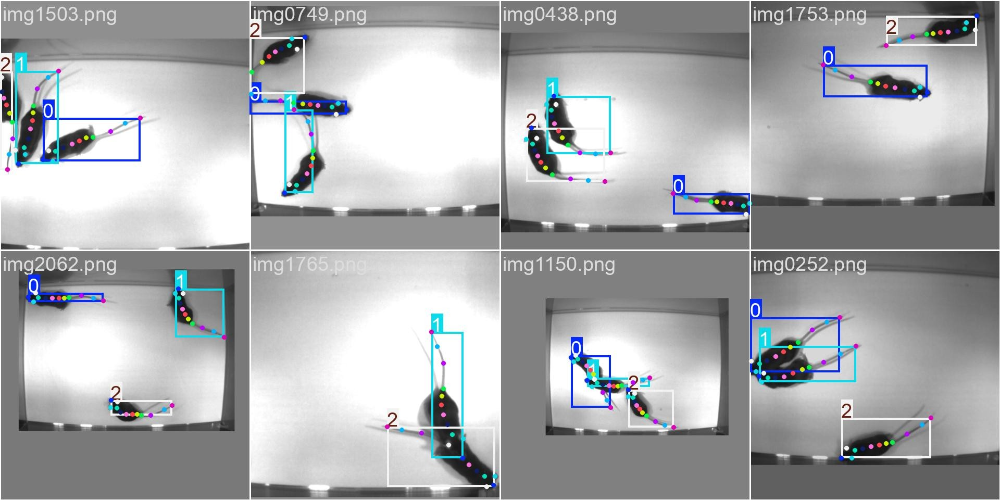

D2Y Documentation#
deeplabcut2yolo#
Convert DLC to YOLO,
Lightning-fast and hassle-free.


deeplabcut2yolo facilitates training DeepLabCut datasets on YOLO models. Deeplabcut2yolo automatically converts DeepLabCut (DLC) labels to COCO-like format compatible with YOLO, while providing customizability for more advanced users, so you can spend your energy on what matters!
 All DeepLabCut datasets belong to their respective owner under CC BY-NC 4.0. This particular image is the training data for YOLO, converted using deeplabcut2yolo from the Tri-Mouse dataset (Lauer et al., 2022).
Quick Start#
import deeplabcut2yolo as d2y
d2y.convert("./deeplabcut-dataset/")
# To also generate data.yml
d2y.convert(
dataset_path,
train_paths=train_paths,
val_paths=val_paths,
skeleton_symmetric_pairs=skeleton_symmetric_pairs,
data_yml_path="data.yml",
class_names=class_names,
verbose=True,
)
To install deeplabcut2yolo using pip:
pip install deeplabcut2yolo
For more information, see examples and documentation.
Contribution#
You can contribute to deeplabcut2yolo by making pull requests. Currently, these are high-priority features:
Testing module and test cases
Documentation
Citation#
Citation is not required but is greatly appreciated. If this project helps you, please cite using the following APA-style reference
Pornsiriprasert, S. (2025). Deeplabcut2yolo: A Python Library for Converting DeepLabCut Dataset to YOLO Format (Version 2.2.4) [Computer software]. GitHub. https://github.com/p-sira/deeplabcut2yolo/
or this BibTeX entry.
@software{deeplabcut2yolo,
author = {{Pornsiriprasert, S}},
title = {Deeplabcut2yolo: A Python Library for Converting DeepLabCut Dataset to YOLO Format},
url = {https://github.com/p-sira/deeplabcut2yolo/},
version = {2.2.4},
publisher = {GitHub},
year = {2025},
month = {1},
}